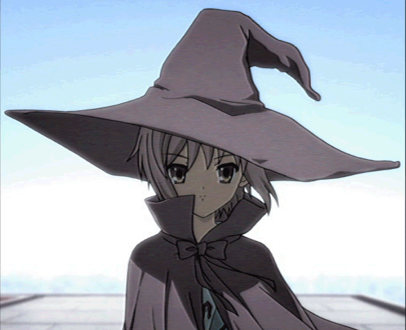

狐へようこそ。 / ¡Bienvenido!

Kitsune es un archivo digital dedicado a la música japonesa, los videojuegos y la cultura de Internet. El sitio reúne fichas informativas, fotografías, referencias y enlaces sobre bandas, artistas, videojuegos y distintas comunidades digitales. Está desarrollado como un proyecto personal de HTML y CSS, con especial interés en la estética web japonesa de los años 2000, el anime y la cultura alternativa de Internet.
Última actualización: noviembre de 2026 · Sitio en construcción. ☆
¿Qué significa Kitsune?狐 (kitsune) significa «zorro» en japonés. En el folclore japonés, los kitsune aparecen como criaturas sobrenaturales asociadas con los zorros.
カテゴリー / Categorías

☆ ¿Qué hay de nuevo?
Primera versión de Kitsune en línea.
Se añadieron artistas y discografías.
Se actualizaron la distribución, los gráficos y la navegación.
更新履歴 / Historial de actualizaciones
- Noviembre de 2026 — reorganización del archivo.
- Se agregaron fichas de música y videojuegos.
- Algunas páginas todavía están incompletas.
Sobre el sitio
Kitsune es un proyecto escolar y personal realizado en HTML y CSS. Las páginas no son oficiales y los contenidos se presentan con fines informativos.
Trabajo escolar de informática · HTML / CSS